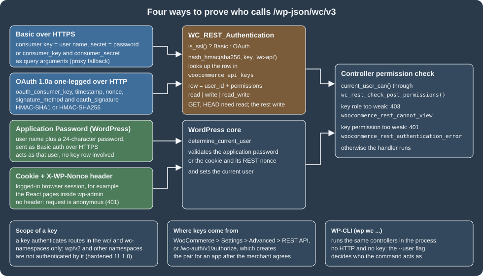
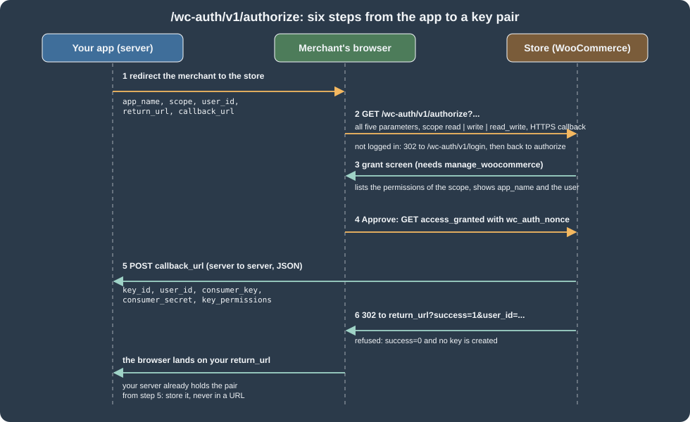
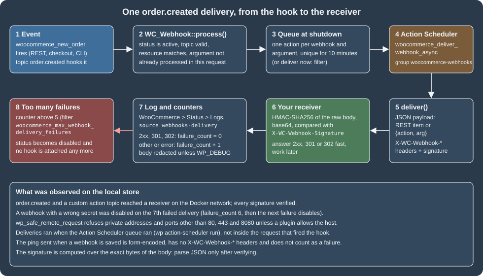
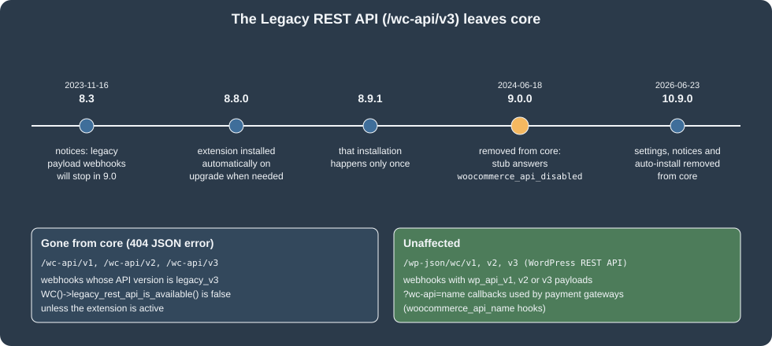

REST API and Webhooks
|
This content was generated with the assistance of AI and should be verified against the official documentation before being relied on in production. |
The WooCommerce REST API is the back-office interface of a WooCommerce store: an ERP, an accounting package, a
marketplace connector, a fulfilment tool or a script reads and writes products, orders, customers, coupons, shipping
zones and settings through JSON over HTTP, and the store pushes events to the outside world through webhooks. It is
built on the WordPress REST API, so everything that WordPress offers (routes under /wp-json, JSON Schema, _fields,
pagination headers, OPTIONS discovery) applies, and WooCommerce adds its own authentication (consumer key and secret),
its own namespaces and its own webhook engine. This page covers the current version, wc/v3, on WooCommerce 11.2.1
(published 2026-10-09) running on WordPress 7.1.3, checked on 2026-10-27. It applies to every self-hosted
WooCommerce store; nothing here depends on a plan or an edition. The WordPress REST API itself is covered in
REST API: Using It and REST API: Extending It.
The page follows one thread, the Pocket Coffee shop of this section: create the variable product "Single-origin beans"
(18 variants) and a starter kit through the API, place and refund an order, add a roast_date field and a roast-batches
route to the API, and report every new order and every roasting to an external receiver with a signed webhook. Every
request and every output below comes from a local WordPress 7.1.3 and WooCommerce 11.2.1 store (PHP 8.3.36, MariaDB
11.8.9) in Docker, with a small plugin named pocket-coffee-restapi and a throw-away key pair; the secrets themselves
are shown as ck_xxxxxxxx and cs_xxxxxxxx. The part that needs a browser or a public HTTPS address is said to be
unrun in the section What was run and what was not.
The Store API (/wc/store/v1) is a different interface for shoppers and storefronts, described on the
Store API page. The data model behind both is on
CRUD Objects and Data Stores; orders are stored with
HPOS; deliveries of webhooks are queued by
Action Scheduler; the command line that wraps the same controllers is
the WC-CLI page. OAuth 1.0a itself is explained on the
OAuth 1.0 page of this site, and the PHP used in the examples is covered by the
PHP section.

Namespaces and versions
/wp-json lists every namespace that is registered on a site. On the test store the list was:
oembed/1.0, ec-hello/v1, wc/v3, wc/v1, wc/pos/v1/catalog, jetpack/v4, wc-admin, wc-analytics,
wc/store, wc/store/v1, wc/private, wc/v2, wc-admin-email, wc-push-notifications, wc-telemetry,
wccom-site/v3, wp-abilities/v1, mcp, wp/v2, wp-site-health/v1 and wp-block-editor/v1. The ones that matter
for integrations are these:
| Namespace | What it is | Authentication |
|---|---|---|
|
The current and recommended REST API (112 routes on 11.2.1). The official reference says to use it for all new integrations. |
Consumer key and secret, OAuth 1.0a, application password, cookie and nonce |
|
Earlier versions of the same API, still registered. They are versions of the WordPress REST API, not the Legacy REST API. |
The same as |
|
Experimental. It is registered only when the feature flag |
The same as |
|
The Store API for storefronts, carts and checkout. Public for shoppers, writes need a nonce or a |
None for reading, nonce or |
|
Internal routes used by the React admin pages and the Analytics reports. They can change between releases and are not an integration contract. |
Cookie and nonce in the admin, or a key (the |
|
Used by WooCommerce.com to connect a store to the Marketplace. |
Its own connection token |
|
The WordPress Abilities API and the MCP Adapter (see AI and MCP). |
Application password |
The version history in the official introduction is short: v1 came with WooCommerce 2.6, v2 with 3.0 and v3
with 3.5. The introduction asks for WooCommerce 3.5 or later, WordPress 4.4 or later and pretty permalinks; with the
default "plain" permalinks the routes are reachable as ?rest_route=/wc/v3/products instead (the request below worked
with a key, and WooCommerce 11.1.0 fixed the detection of requests made that way), but pretty permalinks are what every
client library assumes.
$ curl -s "${STORE}/wp-json/wc/v3" | python3 -c "import json,sys; d=json.load(sys.stdin); print(d['namespace'], len(d['routes']))"
wc/v3 112Source: WooCommerce docs: REST API
The index of a namespace is public and lists every route with its allowed methods and arguments, so
OPTIONS /wp-json/wc/v3/products returns the complete JSON Schema of a product, which is the quickest reference for a
field name. The routes of wc/v3 on 11.2.1 fall into these groups:
| Group | Routes (relative to /wp-json/wc/v3) |
|---|---|
Catalogue |
|
Sales |
|
Configuration |
|
Operations |
|
Every collection that accepts writes has a sibling batch route; see Batch requests. Extensions add routes to the
same namespace (wc/v3/payments/... when WooPayments is active, for instance, which uses integer minor units for some
amounts, unlike the decimal strings of the core resources).
Keys: the consumer key and the consumer secret
Creating a key
In the admin, WooCommerce > Settings > Advanced > REST API lists the keys and has the Add key button (before WooCommerce 3.4 the same screen lived under Settings > API > Keys/Apps). A key has a description, an owner (any WordPress user) and a permission:
-
Read:
GETandHEADrequests; -
Write:
POST,PUT,PATCHandDELETErequests; -
Read/Write: both.
The generated consumer key (ck_ plus 40 hexadecimal digits) and consumer secret (cs_ plus 40) are shown once;
the secret is hidden when the key is opened again, so it has to be stored at that moment. Requests made with the key
act as the owner: a key owned by a Shop manager can do what a Shop manager can do, and a key owned by a customer
cannot list orders at all. If the owner is deleted, the key stops working and is not transferred to another user.
Keys live in the table wp_woocommerce_api_keys. Its columns, as created by 11.2.1, show how they are protected:
| Column | Type | Content |
|---|---|---|
|
|
The id used by the admin screen and returned by |
|
|
The WordPress user the key acts as |
|
|
Free text; |
|
|
|
|
|
Not the key: |
|
|
The secret in plain text. The server needs it in clear to verify OAuth signatures, so a leaked dump leaks secrets (a request also needs the key, which is stored only as a hash); treat the whole table as sensitive. |
|
|
OAuth nonces used in the last 15 minutes |
|
|
The last seven characters of the key, shown in the admin list to recognise a key |
|
|
Updated when the key authenticates a request. Internal REST calls made by PHP code in the same request do not update it; the filter |
For tests, a key can be inserted straight into the table. The following file is what created the pair that every
request on this page used (it ran with wp eval-file; real keys come from the admin screen or /wc-auth, and the printed
values are never committed or pasted):
<?php
// Local test stores only: create a read_write key for user 1 and print it once.
global $wpdb;
$consumer_key = 'ck_' . wc_rand_hash();
$consumer_secret = 'cs_' . wc_rand_hash();
$wpdb->insert(
$wpdb->prefix . 'woocommerce_api_keys',
array(
'user_id' => 1,
'description' => 'pocket-coffee-restapi read_write',
'permissions' => 'read_write',
'consumer_key' => wc_api_hash( $consumer_key ),
'consumer_secret' => $consumer_secret,
'truncated_key' => substr( $consumer_key, -7 ),
)
);
echo $consumer_key . "\n" . $consumer_secret . "\n";Basic authentication over HTTPS
On an HTTPS request, the key is the user name and the secret is the password of HTTP Basic authentication:
curl -s -u "${WC_CONSUMER_KEY}:${WC_CONSUMER_SECRET}" \
"${STORE}/wp-json/wc/v3/products?per_page=2&_fields=id,sku,price"Output on the test store, whose container does not terminate TLS: STORE was http://localhost:8081 and every call
carried -H 'X-Forwarded-Proto: https', which the official WordPress Docker image maps to $_SERVER['HTTPS']. WooCommerce
chooses the scheme with is_ssl(), so this header is what makes a proxied request count as HTTPS. In production the
header comes from the real proxy and the commands are exactly as shown.
[{"id":12,"sku":"PC-GRIND","price":"34.00"},{"id":11,"sku":"PC-MUG","price":"9.50"}]Some servers do not pass the Authorization header to PHP (FastCGI setups in particular) and then WooCommerce answers
with a "Consumer key is missing" style error. The fallback is to send the same values as the query arguments
consumer_key and consumer_secret; the code reads those first. It worked on the test store
(...products?per_page=1&_fields=id&consumer_key=ck_xxxxxxxx&consumer_secret=cs_xxxxxxxx returned [{"id":12}]), but
the pair ends up in access logs, browser history and Referer headers, so use it only for a server that cannot do better,
and only over HTTPS.
The failures seen when the credentials were wrong or missing:
| Request | Status and code | Message |
|---|---|---|
No credentials |
401 |
Sorry, you cannot list resources. |
Wrong secret |
401 |
Consumer secret is invalid. |
A read-only key sends a |
401 |
The API key provided does not have write permissions. |
A key owned by a customer lists orders or products |
403 |
Sorry, you cannot list resources. |
A key owned by a customer creates a product |
403 |
Sorry, you are not allowed to create resources. |
Key and secret sent over plain HTTP |
401 |
Basic authentication is skipped when |
The 401 for a weak key and the 403 for a weak user are different checks. The first is the permission of the key (read, write, read/write), applied before the controller runs; the second is the capability of the user that owns the key, applied by the controller. A key with Read/Write never gives its owner more rights than the owner has.
OAuth 1.0a over HTTP
Over plain HTTP the secret must never travel, so WooCommerce uses one-legged OAuth 1.0a (RFC 5849): there is no token, only the consumer key and a signature made with the consumer secret. Any standard OAuth 1.0a library can produce the parameters; the signing rules as WooCommerce implements them are:
-
Collect the request parameters (the query string plus the five
oauth_*parameters exceptoauth_signature). The required ones areoauth_consumer_key,oauth_timestamp,oauth_nonce,oauth_signature_methodandoauth_signature.oauth_versionis not needed and the documentation says to leave it out. -
Percent-encode every key and value as RFC 3986 (
rawurlencode()in PHP), sort the pairs by the encoded key and join them askey=valuewith&. -
The base string is
METHOD&percent-encoded-URL&percent-encoded-parameter-string. The URL is the store’s own home URL plus the path, so if the store uses awwwhost the signature must be computed for that host. -
The signature is the base64 of the HMAC of the base string with the key
consumer secret&(a trailing ampersand, the empty token secret). The accepted algorithms are HMAC-SHA1 and HMAC-SHA256; anything else is refused. -
The
oauth_*parameters may travel in the query string or in theAuthorization: OAuth ...header (supported since WooCommerce 3.0); the query string is more reliable because servers differ in how they expose headers. The request body is not signed. -
The timestamp must be within 15 minutes of the server clock and the nonce (32 characters are recommended) may not be reused by the same key within 15 minutes.
The following program, in Python’s standard library only, signs and sends a GET. It ran against the store through plain
HTTP (no X-Forwarded-Proto header), once with each algorithm:
"""One-legged OAuth 1.0a GET to the WooCommerce REST API over plain HTTP (standard library only)."""
import base64
import hashlib
import hmac
import json
import os
import secrets
import sys
import time
from urllib.error import HTTPError
from urllib.parse import parse_qsl, quote, urlsplit
from urllib.request import urlopen
KEY = os.environ["WC_CONSUMER_KEY"]
SECRET = os.environ["WC_CONSUMER_SECRET"]
def rfc3986(value):
return quote(str(value), safe="~")
def sign(method, url, algorithm="sha256", timestamp=None, nonce=None, secret=SECRET):
parts = urlsplit(url)
base_url = f"{parts.scheme}://{parts.netloc}{parts.path}"
params = dict(parse_qsl(parts.query))
params.update({
"oauth_consumer_key": KEY,
"oauth_timestamp": str(timestamp or int(time.time())),
"oauth_nonce": nonce or secrets.token_hex(16),
"oauth_signature_method": f"HMAC-{algorithm.upper()}",
})
pairs = sorted((rfc3986(k), rfc3986(v)) for k, v in params.items())
parameter_string = "&".join(f"{k}={v}" for k, v in pairs)
base_string = "&".join([method.upper(), rfc3986(base_url), rfc3986(parameter_string)])
digest = hmac.new(f"{secret}&".encode(), base_string.encode(), getattr(hashlib, algorithm)).digest()
pairs.append(("oauth_signature", rfc3986(base64.b64encode(digest).decode())))
return base_url + "?" + "&".join(f"{k}={v}" for k, v in pairs)
def get(url, **options):
try:
with urlopen(sign("GET", url, **options)) as response:
return response.status, json.loads(response.read())
except HTTPError as error:
return error.code, json.loads(error.read())
if __name__ == "__main__":
status, body = get(sys.argv[1])
print(status, body)$ export WC_CONSUMER_KEY=ck_xxxxxxxx WC_CONSUMER_SECRET=cs_xxxxxxxx
$ python3 -I oauth1.py 'http://localhost:8081/wp-json/wc/v3/products?per_page=1&_fields=id,sku'
200 [{'id': 143, 'sku': 'PC-BEANS-CRUD'}]The same call with algorithm='sha1' also returned 200. The failures that the rules above produce were reproduced by
changing one input at a time:
| Change | Answer (HTTP 401 woocommerce_rest_authentication_error unless noted) |
|---|---|
The same nonce used twice |
Invalid nonce - nonce has already been used. |
Timestamp one hour in the past |
Invalid timestamp. |
Signature made with a different secret |
Invalid signature - provided signature does not match. |
Only |
401 |
The practical rules: prefer HTTPS and Basic authentication whenever you can; use OAuth 1.0a only where HTTP cannot be avoided (an intranet, a local test); and never sign with HMAC-SHA1 if SHA-256 is available, since both are accepted. The clock of the client matters, so keep it on NTP.
Application passwords, cookies and other methods
Because the WooCommerce routes are WordPress routes, WordPress’s own authentication also works on them. An
application password (created in a user profile or with wp user application-password create) is sent as Basic
authentication with the WordPress user name; it acts as that user, needs no row in woocommerce_api_keys and is
revoked from the profile page. On the test store it worked on wc/v3/products with the HTTPS indicator and answered 401
over plain HTTP, like the keys. It is the credential of the WordPress Abilities API and of the MCP Adapter (see
AI and MCP). For a browser session, the cookie plus an X-WP-Nonce header
(wp_create_nonce( 'wp_rest' )) authenticates the logged-in user: without the nonce the same cookie was refused with the
anonymous 401, with it the request returned data. That is how the React pages inside wp-admin talk to the API. Any WordPress REST
authentication plugin (JWT, for instance) also works, but a third-party plugin is outside what WooCommerce supports.
What a key may reach
WooCommerce keys are meant for the wc/ and wc- namespaces. WooCommerce 11.1.0 hardened the way the authentication
resolves the route a request is really dispatched to (repeated leading slashes, percent-encoded characters, a
rest_route query argument, custom URLs), 11.1.1 added a stricter dispatch check, and 11.2.0 changed the REST key nonce
handling. The rule that results is visible in class-wc-rest-authentication.php: a key authenticates a route only when
it is in a wc/ or wc- namespace, or when the request URI named that exact route. A third-party namespace such as
wc-pocket/v1 therefore accepts WooCommerce keys (the code comment says the wc- prefix is there so that extensions can
use the same methods), while wp/v2 does not: GET /wp-json/wp/v2/users with a WooCommerce key was answered with
invalid_username, because WordPress core read the key as a user name. If an integration needs both worlds, give it an
application password too.
Security practice that follows from all of this:
-
One key per integration, owned by a dedicated user with the least role that works (often a Shop manager, never an Administrator), so a leak is contained and a key can be revoked alone.
-
HTTPS for everything that carries a key; keys in environment variables or a secret store, never in URLs, front-end code or repositories.
-
Rotate by creating the new key, switching the integration and revoking the old one in the same admin screen; watch the
last_accesscolumn to find keys nobody uses. -
A key’s Read permission still exposes customer data (names, addresses, emails) through
ordersandcustomers: Read is not harmless.
The /wc-auth endpoint: asking a merchant for a key
An application that is installed by many merchants should not ask them to copy keys by hand. The application
authentication endpoint /wc-auth/v1/authorize implements the handshake shown below: the app sends the merchant’s
browser to the store, the merchant approves, and the store posts a new key pair to the app’s server.

The five query parameters are all mandatory and must be single strings (11.2.0 rejects arrays, which used to cause a fatal error):
| Parameter | Meaning |
|---|---|
|
Shown to the merchant and used in the key description. |
|
|
|
An identifier in the app’s system (not a WooCommerce user id). It comes back unchanged in the callback and in the redirect so the app can match the merchant. |
|
Where the merchant’s browser lands afterwards, with |
|
Where the store posts the keys. It must be |
A Python program that builds the URL (all values percent-encoded, spaces as +):
from urllib.parse import urlencode
store_url = "https://shop.example.test"
params = {
"app_name": "Pocket Coffee Roaster",
"scope": "read_write",
"user_id": 123,
"return_url": "https://app.example.com/return",
"callback_url": "https://app.example.com/callback",
}
print(f"{store_url}/wc-auth/v1/authorize?{urlencode(params)}")https://shop.example.test/wc-auth/v1/authorize?app_name=Pocket+Coffee+Roaster&scope=read_write&user_id=123&return_url=https%3A%2F%2Fapp.example.com%2Freturn&callback_url=https%3A%2F%2Fapp.example.com%2FcallbackWhat the store does with it, from class-wc-auth.php:
-
authorizevalidates the five parameters. An anonymous visitor is redirected (302) to/wc-auth/v1/login, which shows a login form (overridable templateauth/form-login.php) and returns toauthorize. If the store uses Jetpack’s WordPress.com SSO the redirect goes to that login instead. -
A logged-in user with the
manage_woocommercecapability sees the grant screen (templateauth/form-grant-access.php), which lists the permissions of the scope. The list is filterable withwoocommerce_api_permissions_in_scope; forread_writeit says that the app can create webhooks and view and manage coupons, customers, orders and sales reports, and products. -
Approving calls
access_grantedwith the noncewc_auth_nonce. The store inserts a key owned by the approving user with the description<app name> - API (<date time>), postskey_id,user_id,consumer_key,consumer_secretandkey_permissionsas JSON to the callback and, if the callback answered 200, redirects the browser toreturn_url?success=1&user_id=.... If the callback fails, the key that was just created is deleted again and the merchant sees an "Access denied" error.
The callback body is JSON, not a form, so a PHP receiver reads it from php://input; a PHP script receives no $_POST:
{
"key_id": 1,
"user_id": 123,
"consumer_key": "ck_xxxxxxxx",
"consumer_secret": "cs_xxxxxxxx",
"key_permissions": "read_write"
}Validation was exercised on the test store without a browser (the /wc-auth/v1/... URLs worked with pretty
permalinks): an anonymous authorize answered 302 to /wc-auth/v1/login/?app_name=Pocket%20Coffee%20Roaster&user_id=123&...;
an http:// callback answered 401 Error: The callback_url needs to be over SSL.; scope=admin answered
Error: Invalid scope admin.; and a request with only app_name answered Error: Missing parameter user_id. The grant
and the callback post themselves need a logged-in browser and an HTTPS receiver reachable from the store, and were not run.
Two properties of the flow are easy to misuse. The endpoint exists only to hand an app a key pair; it is not a login for shoppers, and the documentation says so explicitly. And the key is owned by whoever approves, so an agency that approves with its own administrator account gives the app the rights of that administrator: approve with a dedicated low-privilege user instead.
Requests and responses
Anatomy
Bodies are JSON (Content-Type: application/json). A successful GET returns 200, a POST that creates returns 201, and
errors return a JSON object with code, message and data.status. Dates are ISO 8601 (2026-10-27T18:37:48) in the
site’s time zone with a _gmt twin; identifiers are integers; and money is a string with the store’s decimals
("29.90"), never a float, so a client must not round-trip prices through binary floating point.
| Parameter | Effect |
|---|---|
|
Pagination. The default is 10 items per page and the maximum is 100. |
|
A comma-separated list of properties to keep, which also saves server time on large collections. It works on collections and single items, but not on a |
|
|
|
Number of decimals for amounts on orders ( |
|
Standard collection filters. Each resource adds its own (below). |
|
Wraps |
|
Tunnels |
The response to the first call of this page, with the pagination headers:
$ curl -s -D - -o /dev/null -u "${WC_CONSUMER_KEY}:${WC_CONSUMER_SECRET}" \
"${STORE}/wp-json/wc/v3/products?per_page=2&_fields=id,name,sku,price"
HTTP/1.1 200 OK
Link: <https://localhost:8081/wp-json/wc/v3/products?per_page=2&_fields=id%2Cname%2Csku%2Cprice&page=2>; rel="next"
X-WP-Total: 3
X-WP-TotalPages: 2(Access-Control-Expose-Headers lists X-WP-Total, X-WP-TotalPages and Link, so browser clients can read them.)
The count was 3 because the store had three products at that moment; the list grew later in the session.
Typical error codes seen while building the example:
| Situation | Status and code | Remedy |
|---|---|---|
Route missing (permalinks, wrong namespace, |
404 |
Enable pretty permalinks or use |
Invalid or duplicated SKU |
400 |
Use a unique SKU. |
Invalid resource id |
400 or 404 ( |
Check the id. |
Parameter fails the schema |
400 |
Fix the value; for example a |
More than 100 items in a batch |
413 |
Split the batch. |
Refund through a gateway that cannot refund |
500 |
Send |
If ModSecurity answers 501 Method Not Implemented, the official introduction points to a known issue of that rule
set; if a host refuses PUT or DELETE, use _method.
Resources by example
All the examples below use STORE and the key pair of the environment, and the Python snippets use this helper, which
adds the Basic header (the stack answers on HTTP, so the example adds the proxy header; a real client does not):
import base64
import json
import os
import urllib.error
import urllib.request
BASE = os.environ["STORE"] + "/wp-json"
def api(method, path, body=None):
key, secret = os.environ["WC_CONSUMER_KEY"], os.environ["WC_CONSUMER_SECRET"]
request = urllib.request.Request(
BASE + path,
method=method,
data=json.dumps(body).encode() if body is not None else None,
)
request.add_header("Authorization", "Basic " + base64.b64encode(f"{key}:{secret}".encode()).decode())
request.add_header("X-Forwarded-Proto", "https") # only because the local container has no TLS
if body is not None:
request.add_header("Content-Type", "application/json")
try:
response = urllib.request.urlopen(request)
except urllib.error.HTTPError as error:
response = error
return response.getcode(), json.loads(response.read() or "null")Source: WooCommerce docs: REST API
Products and variations
The catalogue of Pocket Coffee is a variable product with the attributes origin, grind and size, and a simple product.
Attributes that are used for variations are defined on the product with variation: true; variations/generate
(present on 11.2.1) then creates one variation for every combination, and a variation batch sets SKUs, prices and stock
for all of them in one request:
import os
from api import api # the helper above
beans = {
"name": "Single-origin beans", "type": "variable", "status": "publish", "sku": "PC-BEANS",
"roast_date": "2026-10-26",
"attributes": [
{"name": "Origin", "visible": True, "variation": True,
"options": ["Ethiopia Yirgacheffe", "Colombia Huila", "Brazil Cerrado"]},
{"name": "Grind", "visible": True, "variation": True, "options": ["Whole bean", "Espresso", "Filter"]},
{"name": "Size", "visible": True, "variation": True, "options": ["250 g", "1 kg"]},
],
}
status, product = api("POST", "/wc/v3/products", beans)
print(status, product["id"], product["type"])
status, generated = api("POST", f"/wc/v3/products/{product['id']}/variations/generate", {})
print(status, generated)
status, variations = api("GET", f"/wc/v3/products/{product['id']}/variations?per_page=100&_fields=id,attributes")
codes = {"Ethiopia Yirgacheffe": "ETH", "Colombia Huila": "COL", "Brazil Cerrado": "BRA",
"Whole bean": "WHL", "Espresso": "ESP", "Filter": "FIL", "250 g": "250", "1 kg": "1KG"}
updates = []
for variation in variations:
chosen = {a["name"]: a["option"] for a in variation["attributes"]}
small = chosen["Size"] == "250 g"
price = 8.90 if small else 29.90
if chosen["Origin"].startswith("Ethiopia"):
price += 1.00 if small else 4.00
updates.append({
"id": variation["id"],
"sku": f"PC-{codes[chosen['Origin']]}-{codes[chosen['Grind']]}-{codes[chosen['Size']]}",
"regular_price": f"{price:.2f}",
"manage_stock": True, "stock_quantity": 40,
"weight": "0.25" if small else "1",
})
status, result = api("POST", f"/wc/v3/products/{product['id']}/variations/batch", {"update": updates})
print(status, len(result["update"]), [u["error"] for u in result["update"] if "error" in u])201 37 variable
200 {'count': 18}
200 18 []The three origins, three grinds and two sizes gave 18 variations with SKUs such as PC-ETH-WHL-250 (9.90) and
PC-BRA-FIL-1KG (29.90); the Single-origin beans product listing then showed roast_date too (the field comes from
the plugin below). The starter kit is a plain POST with "type": "simple".
The filters of GET /wc/v3/products on 11.2.1 are: after, before, modified_after, modified_before,
dates_are_gmt, search (and search_fields, search_sku, search_name_or_sku), sku, slug, status, type,
include_status, exclude_status, include_types, exclude_types, featured, on_sale, downloadable, virtual,
min_price, max_price, stock_status, category, tag, brand, shipping_class, tax_class, attribute with
attribute_term, parent, parent_exclude, include, exclude, include_meta, exclude_meta, image_size,
offset, order, orderby, page and per_page. DELETE /products/<id> moves a product to the trash and
DELETE /products/<id>?force=true removes it for good.
Orders
Orders are created and updated with the same CRUD objects as the admin, so on a store with HPOS they land in
wc_orders (the test store showed the new order with type shop_order and the refund with type shop_order_refund in that
table) and any plugin hook on order creation fires. The order below is Ada Lovelace’s first purchase: two kilos of
the Brazilian filter blend, the starter kit and flat-rate shipping, paid by bank transfer, then confirmed, annotated and
partly refunded.
from api import api
address = {"first_name": "Ada", "last_name": "Lovelace", "address_1": "Calle de Alcala 1",
"city": "Madrid", "postcode": "28014", "country": "ES", "state": "M"}
status, customer = api("POST", "/wc/v3/customers", {
"email": "ada.restapi@example.test", "first_name": "Ada", "last_name": "Lovelace",
"username": "ada-restapi", "billing": {**address, "email": "ada.restapi@example.test"},
})
status, order = api("POST", "/wc/v3/orders", {
"status": "pending",
"customer_id": customer["id"],
"payment_method": "bacs",
"payment_method_title": "Direct bank transfer",
"billing": {**address, "email": "ada.restapi@example.test"},
"shipping": address,
"line_items": [
{"product_id": 37, "variation_id": 55, "quantity": 2},
{"product_id": 22, "quantity": 1},
],
"shipping_lines": [{"method_id": "flat_rate", "method_title": "Flat rate", "total": "4.90"}],
"meta_data": [{"key": "_pocket_coffee_source", "value": "rest-api-demo"}],
})
print(status, order["id"], order["status"], order["total"], order["currency"])
status, paid = api("PUT", f"/wc/v3/orders/{order['id']}", {
"status": "processing", "set_paid": True, "transaction_id": "BANK-TEST-0001",
})
print(status, paid["status"], paid["date_paid"])
status, note = api("POST", f"/wc/v3/orders/{order['id']}/notes",
{"note": "Roasted 2026-10-26, shipping Monday", "customer_note": False})
status, refund = api("POST", f"/wc/v3/orders/{order['id']}/refunds", {
"amount": "24.00", "reason": "Starter kit damaged", "api_refund": False,
"line_items": [{"id": 28, "quantity": 1, "refund_total": "24.00"}],
})
print(status, refund["id"], refund["amount"], refund["refunded_by"])201 64 pending 88.70 EUR
200 processing 2026-10-27T18:37:59
201 66 24.00 1Behaviour worth knowing, all seen in this run:
-
The total was 88.70: two kilos at 29.90, the 24.00 kit and 4.90 of shipping. The order carried no tax lines, so
total_taxwas0.00; taxes are stored as given intax_linesand the line-itemtaxes, and the calculation rules are on Taxes, Coupons, Currencies and i18n. -
Moving the order from
pendingtoprocessingwithset_paid: trueran the normal status machinery: stock of the variation went from 40 to 38 (the order notes list "Stock levels reduced"), the paid date was set, and the emails were attempted. The test container has no mail transport, so the order notes recordedEmail "Processing order" failed to sendandEmail "New order" failed to send; the order itself was unaffected. -
A refund through a gateway that cannot refund automatically (here bank transfer) fails with a 500 unless the request says
"api_refund": false, which records the refund without calling the gateway. The refund became its own record with a negative total, and the order kept itsprocessingstatus. -
A refund amount larger than what remains answered
Invalid refund amount.. WooCommerce 11.3 (in beta on the check date) tightens the validation of line-item amounts in REST refunds, and 11.1.0 added thewc/v4refundtotalfield; neither was run here. -
GET /orders?status=processing,on-hold&orderby=date&order=descaccepts a comma-separated status list. Since 10.8.0wc-checkout-draftorders (abandoned block checkouts) are excluded from default listings and fromstatus=any; ask for them explicitly withstatus=checkout-draftif you really want them. -
The filters of
GET /ordersarestatus,customer,product,after,before,modified_after,modified_before,dates_are_gmt,created_via,parent,parent_exclude,dp,search,include,exclude,include_meta,exclude_meta,order_item_display_meta,offset,order,orderby,pageandper_page. -
Never write orders with
wp_insert_post()orupdate_post_meta()from an integration written in PHP; call the REST API or the CRUD functions so that HPOS and the hooks see the change.
Coupons, settings and the rest
from api import api
status, category = api("POST", "/wc/v3/products/categories", {"name": "Beans (REST demo)"})
status, coupon = api("POST", "/wc/v3/coupons", {
"code": "coffeeclub-rest", "discount_type": "percent", "amount": "10",
"product_categories": [category["id"]], "description": "Coffee Club: 10% off beans",
})
print(status, coupon["id"], coupon["code"], coupon["amount"], coupon["product_categories"])
status, currency = api("GET", "/wc/v3/settings/general/woocommerce_currency")
print(status, currency["id"], currency["value"])
status, zones = api("GET", "/wc/v3/shipping/zones?_fields=id,name,order")
print(status, zones)201 141 coffeeclub-rest 10.00 [25]
200 woocommerce_currency EUR
200 [{'id': 0, 'name': 'Locations not covered by your other zones', 'order': 0}, {'id': 1, 'name': 'Spain', 'order': 0}]Source: WooCommerce docs: REST API v3
The Coffee Club rule of the running example is a percentage coupon restricted to a category; the "group = Coffee Club"
membership part of the rule is not a core concept of WooCommerce and is handled by extensions or custom code (see
Subscriptions, Memberships and Bookings). Coupon codes
are unique: creating coffeeclub10 a second time answered 400 woocommerce_rest_coupon_code_already_exists.
settings exposes the option groups of the admin screens as readable and writable items (PUT with {"value": ...}),
shipping/zones and its locations and methods sub-routes configure zones, payment_gateways reads and updates
gateway settings, system_status reports the environment and system_status/tools runs the maintenance tools
(clear transients, regenerate lookup tables, …). reports returns sales and top-seller totals; the Analytics
reports on wc-analytics are a separate, internal family (see Analytics).
Calling the API from PHP code on the same site
A plugin does not need HTTP, a key or a nonce to use its own store’s API: it builds a WP_REST_Request and dispatches it
in-process as the current user, or uses the helper WooCommerce itself uses for webhook payloads.
<?php
// Run with: wp eval-file internal-rest.php --user=admin
$response = rest_do_request( new WP_REST_Request( 'GET', '/wc/v3/orders/64' ) );
$order = $response->get_data();
printf( "%d order %s is %s, total %s %s\n", $response->get_status(), $order['number'], $order['status'], $order['total'], $order['currency'] );
$util = wc_get_container()->get( Automattic\WooCommerce\Utilities\RestApiUtil::class );
$items = $util->get_endpoint_data( '/wc/v3/products', array( 'sku' => 'PC-KIT' ) );
printf( "%d product(s): %s\n", count( $items ), $items[0]['sku'] );Source: WooCommerce docs: CRUD objects
200 order 64 is processing, total 88.70 EUR
1 product(s): PC-KITRestApiUtil::get_endpoint_data() replaced the old WC()->api->get_endpoint_data() of the Legacy REST API; the old
method still exists on the stub but triggers a "doing it wrong" notice (since 9.1.0). For one-off reads inside PHP,
prefer the CRUD functions (wc_get_order(), wc_get_products()) instead of an in-process request.
Batch requests
Every collection that accepts writes has a batch sibling (products/batch, orders/batch, coupons/batch,
products/<id>/variations/batch, webhooks/batch and more). One request carries create, update and delete arrays; the
items of delete are plain ids.
from api import api
status, result = api("POST", "/wc/v3/products/batch", {
"create": [
{"name": "Pocket Mug", "type": "simple", "regular_price": "9.50", "sku": "PC-MUG-RA"},
{"name": "Roasted sample", "type": "simple", "regular_price": "3.00", "sku": "PC-SAMPLE-2"},
],
"update": [{"id": 22, "regular_price": "24.00"}, {"id": 999999, "regular_price": "1"}],
"delete": [59],
})
print(status)
for kind, items in result.items():
for item in items:
print(kind, item.get("id"), item.get("sku"), item.get("error", {}).get("code"))Source: WooCommerce docs: REST API v3
200
create 0 None product_invalid_sku
create 61 PC-SAMPLE-2 None
update 22 PC-KIT None
update 999999 None woocommerce_rest_product_invalid_id
delete 59 PC-SAMPLE NoneWhat the run showed about the semantics:
-
The batch is not a transaction. The HTTP status is 200 even when some items fail; each failed item appears in its own array as
{"id": 0, "error": {"code", "message", "data"}}(for an update, the id of the item). The duplicate SKU answer also carrieddata.resource_idand a freeunique_sku. -
The limit is 100 items for
createplusupdateplusdeletetogether. 101 deletes answered413 woocommerce_rest_request_entity_too_large("Unable to accept more than 100 items for this request.") before any work was done. The filterwoocommerce_rest_batch_items_limit(arguments: the limit and the normalised route) raises or lowers it per resource; a larger limit needs a matchingmax_execution_timeand memory. -
Items inside a batch skip some of the request validation that a single request gets. A product item with an empty name and
"type": "nonsense"was accepted and created as a simple product named "Product", and aroast_datethat violated the schemapatternwas not rejected by the pattern in the batch (the code of the field had to reject it, see below). Validate in code that matters. -
_fieldson the batch URL makes the whole response empty ([]) because the filter is applied to the top-level object that has the keyscreate,updateanddelete. Filter the items on the client. -
Permission checks run per item, as the user that owns the key.
-
The Store API has its own
batchroute with different rules; WooCommerce 10.5.3 fixed a missing path validation there (CVE-2026-3589), described on Performance and Security.
Extending the API for Pocket Coffee
Pocket Coffee wants the roast date of every batch of beans on the product (a custom field _roast_date, shown as a badge
by the theme), writable through the API, and a route that lists the batches. One plugin does both, plus the code that
the webhook section uses.
A field on an existing resource
register_rest_field( 'product', ... ) adds a property to the product controllers; WooCommerce’s controllers honour it
on every version they share the schema code with (it appeared in the wc/v3 responses and in wp wc product get, which
uses the wc/v2 schema). The pattern has a trap that cost a failed run: errors returned by an update_callback are
ignored by the WooCommerce CRUD controllers (they ignore the WP_Error that the WordPress core controller would return),
so the first version of the plugin created a product with a bad date and answered 201. Two protections fixed it: a
JSON Schema pattern that rejects the value before the callback runs (single requests), and a WC_REST_Exception thrown
by the callback, which the controllers catch, turn into an error and use to delete the half-created object (batches,
where the pattern is not applied).
<?php
/**
* Plugin Name: Pocket Coffee REST API
* Description: Extends the WooCommerce REST API for the Pocket Coffee shop: a roast_date product field, a roast-batches route and a custom webhook topic.
* Version: 0.1.0
* Requires at least: 7.0
* Requires PHP: 7.4
* Requires Plugins: woocommerce
* License: GPL-2.0-or-later
* Text Domain: pocket-coffee-restapi
*
* @package PocketCoffee\RestApi
*/
defined( 'ABSPATH' ) || exit;
use Automattic\WooCommerce\Utilities\FeaturesUtil;
add_action(
'before_woocommerce_init',
static function () {
if ( class_exists( FeaturesUtil::class ) ) {
FeaturesUtil::declare_compatibility( 'custom_order_tables', __FILE__, true );
}
}
);
/**
* Add a writable roast_date field to /wc/v3/products responses and requests.
* WC-CLI (which builds its commands from the wc/v2 routes) sees the field too.
*/
add_action(
'rest_api_init',
static function () {
register_rest_field(
'product',
'roast_date',
array(
'get_callback' => static function ( array $item ) {
$product = wc_get_product( $item['id'] );
return $product ? (string) $product->get_meta( '_roast_date' ) : '';
},
'update_callback' => static function ( $value, $product ) {
// Requests sent through /products/batch skip the schema "pattern" check, so check again.
if ( ! preg_match( '/^\d{4}-\d{2}-\d{2}$/', (string) $value ) ) {
throw new WC_REST_Exception( 'pocket_coffee_invalid_roast_date', 'roast_date must use the YYYY-MM-DD format.', 400 );
}
$product->update_meta_data( '_roast_date', (string) $value );
$product->save();
/**
* Fires after a roast date was stored. A webhook with the topic
* action.woocommerce_pocket_coffee_batch_roasted delivers it.
*
* @since 0.1.0
* @param int $product_id Product ID.
*/
do_action( 'woocommerce_pocket_coffee_batch_roasted', $product->get_id() );
return true;
},
'schema' => array(
'description' => 'Date the beans were roasted (YYYY-MM-DD).',
'type' => 'string',
'pattern' => '^\d{4}-\d{2}-\d{2}$',
'context' => array( 'view', 'edit' ),
),
)
);
}
);
/**
* Let WooCommerce load a controller together with its own wc/v3 controllers.
*/
add_filter(
'woocommerce_rest_api_get_rest_namespaces',
static function ( array $namespaces ) {
require_once __DIR__ . '/includes/class-pocket-coffee-roast-batches-controller.php';
$namespaces['wc/v3']['roast-batches'] = Pocket_Coffee_Roast_Batches_Controller::class;
return $namespaces;
}
);
/**
* Log an order when it is placed: the first time it reaches a paid or awaiting-payment status.
* woocommerce_new_order fires before the line items are saved, so the total is still 0 there.
* A webhook with the topic order.created reports the same event to an external system.
*/
add_action(
'woocommerce_order_status_changed',
static function ( $order_id, $from, $to, $order ) {
if ( in_array( $to, array( 'processing', 'on-hold' ), true ) && in_array( $from, array( 'new', 'pending', 'checkout-draft' ), true ) ) {
wc_get_logger()->info(
sprintf( 'Order placed: #%s total %s %s (%s to %s)', $order->get_order_number(), $order->get_total(), $order->get_currency(), $from, $to ),
array( 'source' => 'pocket-coffee-restapi' )
);
}
},
10,
4
);The file declares HPOS compatibility on before_woocommerce_init (see
Extension Development), and it passes the WooCommerce-Core PHPCS
standard with no findings (WordPress-Extra as well). The behaviour, before and after the fix:
$ curl -s -u "${WC_CONSUMER_KEY}:${WC_CONSUMER_SECRET}" -X PUT -H 'Content-Type: application/json' \
"${STORE}/wp-json/wc/v3/products/22" -d '{"roast_date":"yesterday"}'
{"code":"rest_invalid_param","message":"Invalid parameter(s): roast_date","data":{"status":400,"params":{"roast_date":"roast_date does not match pattern ^\\d{4}-\\d{2}-\\d{2}$."},"details":{"roast_date":{"code":"rest_invalid_pattern","message":"roast_date does not match pattern ^\\d{4}-\\d{2}-\\d{2}$.","data":null}}}}
$ curl -s -u "${WC_CONSUMER_KEY}:${WC_CONSUMER_SECRET}" -X PUT -H 'Content-Type: application/json' \
"${STORE}/wp-json/wc/v3/products/22?_fields=id,roast_date" -d '{"roast_date":"2026-10-27"}'
{"id":22,"roast_date":"2026-10-27", ...}In a batch the same bad value is now an item error, and nothing is created:
{"create": [{"id": 0, "error": {"code": "pocket_coffee_invalid_roast_date", "message": "roast_date must use the YYYY-MM-DD format.", "data": {"status": 400}}}]}The other hooks that shape a resource are woocommerce_rest_prepare_<type>_object (filter the response, for example
woocommerce_rest_prepare_product_object), woocommerce_rest_insert_<type>_object (fires after a create or update with the
object, the request and a boolean that says whether it is a creation), woocommerce_rest_<type>_object_query and
woocommerce_rest_<type>_query (change the query arguments of a collection) and woocommerce_rest_check_permissions
(override the capability check; use with care). The plain post-type resources use <type> as product, shop_coupon
and so on; orders use shop_order.
A route in the wc/v3 namespace
A custom route can live in any namespace, including your own (pocket-coffee/v1). Putting it in wc/v3 through
woocommerce_rest_api_get_rest_namespaces, as the plugin does, has two benefits: WooCommerce’s authentication treats it
as its own (keys work without further code) and the controller is created by WooCommerce when it registers its own
controllers, but the class and the route are then part of a namespace that WooCommerce owns, so prefix every route with
your vendor name to avoid collisions. A route in your own wc- prefixed namespace (wc-pocket/v1) gets key
authentication without touching WooCommerce’s namespace.
<?php
/**
* A read-only collection in the wc/v3 namespace: /wc/v3/roast-batches.
*
* @package PocketCoffee\RestApi
*/
defined( 'ABSPATH' ) || exit;
/**
* Lists the products that have a roast date, newest roast first.
*/
class Pocket_Coffee_Roast_Batches_Controller extends WP_REST_Controller {
/**
* Namespace.
*
* @var string
*/
protected $namespace = 'wc/v3';
/**
* Route base.
*
* @var string
*/
protected $rest_base = 'roast-batches';
/**
* Register the route.
*/
public function register_routes() {
register_rest_route(
$this->namespace,
'/' . $this->rest_base,
array(
array(
'methods' => WP_REST_Server::READABLE,
'callback' => array( $this, 'get_items' ),
'permission_callback' => array( $this, 'get_items_permissions_check' ),
'args' => $this->get_collection_params(),
),
'schema' => array( $this, 'get_public_item_schema' ),
)
);
}
/**
* Same capability check the products controller uses.
*
* @param WP_REST_Request $request Request.
* @return true|WP_Error
*/
public function get_items_permissions_check( $request ) {
if ( ! wc_rest_check_post_permissions( 'product', 'read' ) ) {
return new WP_Error(
'woocommerce_rest_cannot_view',
__( 'Sorry, you cannot list resources.', 'pocket-coffee-restapi' ),
array( 'status' => rest_authorization_required_code() )
);
}
return true;
}
/**
* Products that have a roast date, newest roast first.
*
* @param WP_REST_Request $request Request.
* @return WP_REST_Response
*/
public function get_items( $request ) {
$query = new WP_Query(
array(
'post_type' => 'product',
'post_status' => 'publish',
'posts_per_page' => (int) $request['per_page'],
'paged' => (int) $request['page'],
'meta_key' => '_roast_date', // phpcs:ignore WordPress.DB.SlowDBQuery.slow_db_query_meta_key
'orderby' => 'meta_value',
'order' => 'DESC',
)
);
$items = array();
foreach ( $query->posts as $post ) {
$product = wc_get_product( $post->ID );
$items[] = $this->prepare_item_for_response( $product, $request )->get_data();
}
$response = rest_ensure_response( $items );
$response->header( 'X-WP-Total', (int) $query->found_posts );
$response->header( 'X-WP-TotalPages', (int) $query->max_num_pages );
return $response;
}
/**
* Shape one item.
*
* @param WC_Product $product Product.
* @param WP_REST_Request $request Request.
* @return WP_REST_Response
*/
public function prepare_item_for_response( $product, $request ) {
$roast = (string) $product->get_meta( '_roast_date' );
$days = $roast ? (int) floor( ( time() - strtotime( $roast . ' 00:00:00 UTC' ) ) / DAY_IN_SECONDS ) : null;
return rest_ensure_response(
array(
'product_id' => $product->get_id(),
'sku' => $product->get_sku(),
'name' => $product->get_name(),
'roast_date' => $roast,
'days_since_roast' => $days,
)
);
}
/**
* Item schema.
*
* @return array
*/
public function get_item_schema() {
return array(
'$schema' => 'http://json-schema.org/draft-04/schema#',
'title' => 'roast_batch',
'type' => 'object',
'properties' => array(
'product_id' => array( 'type' => 'integer' ),
'sku' => array( 'type' => 'string' ),
'name' => array( 'type' => 'string' ),
'roast_date' => array( 'type' => 'string' ),
'days_since_roast' => array( 'type' => array( 'integer', 'null' ) ),
),
);
}
}$ curl -s -u "${WC_CONSUMER_KEY}:${WC_CONSUMER_SECRET}" "${STORE}/wp-json/wc/v3/roast-batches?per_page=2"
[{"product_id":22,"sku":"PC-KIT","name":"Starter kit","roast_date":"2026-10-27","days_since_roast":0},{"product_id":37,"sku":"PC-BEANS","name":"Single-origin beans","roast_date":"2026-10-26","days_since_roast":1}]
$ curl -s -o /dev/null -w '%{http_code}\n' "${STORE}/wp-json/wc/v3/roast-batches"
401The same route answered with the read-only key and refused the anonymous call. Because the controller queries
product posts, it is correct for products, which are still posts under HPOS; a route that reads orders must use
wc_get_orders() instead of WP_Query.
Webhooks
A webhook is an event notification that WooCommerce sends to a URL of your choice when something happens, so the other
system does not have to poll GET /orders every minute. Webhooks exist since WooCommerce 2.2, are managed in
WooCommerce > Settings > Advanced > Webhooks (before 3.4 under Settings > API) or through /wc/v3/webhooks, and their
engine is the class WC_Webhook.
Topics
A topic is <resource>.<event>; it maps to one or more WordPress hooks. The default map in 11.2.1 (the filter
woocommerce_webhook_topic_hooks returns it) is:
| Topic | Hooks that trigger it |
|---|---|
|
|
|
|
|
|
|
|
|
|
|
|
|
|
|
|
|
|
|
|
Two more kinds exist. An action topic is action.<hook name> where the hook name starts with woocommerce_ or wc_; it
fires for any WordPress action with that prefix (action.woocommerce_add_to_cart for a product added to the cart, or
the custom action of the plugin above), and the payload contains the first argument of the hook. A custom topic adds
a new resource or event through the filters woocommerce_valid_webhook_resources and woocommerce_valid_webhook_events
and wires its hooks with woocommerce_webhook_topic_hooks. Since 10.9.0 the topic validator refuses default-resource
and default-event pairs that have no registered hook (order.published, customer.restored, …), because they used to save
as Active webhooks and never deliver. The event of an action topic may not contain a dot, because the topic is split on dots.
A webhook has these properties (the webhooks schema on 11.2.1):
| Property | Type | Meaning |
|---|---|---|
|
integer |
Read-only. |
|
string |
A friendly name; the admin proposes "Webhook created on <date>". |
|
|
|
|
string |
The topic; required on creation. |
|
string, string, array |
Read-only, derived from the topic ( |
|
string |
Where the payload is POSTed; |
|
string |
Write-only; the HMAC key. If it is empty it defaults to a hash of the current user. It was not returned by |
|
date-time |
Read-only. |
The webhook also stores an API version (wp_api_v1, wp_api_v2, wp_api_v3, or legacy_v3 for old webhooks; the
payload of a resource topic is exactly what the matching wc/vN item route returns), a failure counter and a
"pending delivery" flag (wp_wc_webhooks).
Creating webhooks for Pocket Coffee
Two webhooks serve the running example: order.created reports every new order to the roasting-room system, and
action.woocommerce_pocket_coffee_batch_roasted reports every roast date that is set. The receiver is a 40-line Python
program in a container on the same Docker network; it verifies the signature and writes one JSON line per delivery.
"""Pocket Coffee webhook receiver: verifies X-WC-Webhook-Signature and logs one JSON line per delivery."""
import base64, hashlib, hmac, json, os
from http.server import BaseHTTPRequestHandler, HTTPServer
SECRET = os.environ["PC_WEBHOOK_SECRET"].encode()
LOG = os.environ.get("PC_HOOK_LOG", "/data/hook.log")
class Handler(BaseHTTPRequestHandler):
def do_POST(self):
body = self.rfile.read(int(self.headers.get("Content-Length", 0)))
sent = self.headers.get("X-WC-Webhook-Signature", "")
expected = base64.b64encode(hmac.new(SECRET, body, hashlib.sha256).digest()).decode()
ok = hmac.compare_digest(sent, expected)
try:
payload = json.loads(body)
except ValueError:
payload = {} # the ping sent when a webhook is saved is form-encoded
entry = {
"topic": self.headers.get("X-WC-Webhook-Topic"),
"resource": self.headers.get("X-WC-Webhook-Resource"),
"event": self.headers.get("X-WC-Webhook-Event"),
"webhook_id": self.headers.get("X-WC-Webhook-ID"),
"delivery_id": self.headers.get("X-WC-Webhook-Delivery-ID"),
"signature_ok": ok,
"order_number": payload.get("number"),
"total": payload.get("total"),
"arg": payload.get("arg"),
"body_bytes": len(body),
}
with open(LOG, "a") as fh:
fh.write(json.dumps(entry) + "\n")
self.send_response(200 if ok or not payload else 401)
self.end_headers()
def log_message(self, *args):
pass
HTTPServer(("0.0.0.0", 8080), Handler).serve_forever()The receiver is started in a container on the Docker network of the store, listening on port 8080:
docker run -d --name pc-restapi-hook --network ec-wp \
-v "$PWD/receiver.py:/app/receiver.py:ro" -v "$PWD/hookdata:/data" \
-e PC_WEBHOOK_SECRET="${PC_WEBHOOK_SECRET}" \
python:3.13-slim python /app/receiver.pyWooCommerce delivers with wp_safe_remote_request(), which refuses private and loopback addresses and any port other
than 80, 443 and 8080, so a receiver inside a Docker network needs the host to be allowed. That is a development-only plugin (never ship this to production, where the delivery URL is a public
HTTPS address):
<?php
/**
* Plugin Name: Pocket Coffee REST API (local webhook receiver)
* Description: Development only. Lets wp_safe_remote_request() deliver webhooks to a receiver on the Docker network.
* Version: 0.1.0
*
* @package PocketCoffee\RestApi
*/
defined( 'ABSPATH' ) || exit;
// wp_safe_remote_*() refuses private addresses. Allow exactly one host name, never a wildcard.
add_filter(
'http_request_host_is_external',
static function ( $is_external, $host ) {
return 'pc-restapi-hook' === $host ? true : $is_external;
},
10,
2
);The two webhooks are created through the REST API (the admin form sends the same data; the WP-CLI equivalent is
wp wc webhook create):
import os
from api import api
secret = os.environ["PC_WEBHOOK_SECRET"]
for name, topic in (
("Pocket Coffee order placed", "order.created"),
("Pocket Coffee batch roasted", "action.woocommerce_pocket_coffee_batch_roasted"),
):
status, hook = api("POST", "/wc/v3/webhooks", {
"name": name, "topic": topic, "status": "active",
"delivery_url": "http://pc-restapi-hook:8080/", "secret": secret,
})
print(status, {k: hook.get(k) for k in ("id", "name", "status", "topic", "resource", "event", "hooks", "delivery_url")})201 {'id': 1, 'name': 'Pocket Coffee order placed', 'status': 'active', 'topic': 'order.created', 'resource': 'order', 'event': 'created', 'hooks': ['woocommerce_new_order'], 'delivery_url': 'http://pc-restapi-hook:8080/'}
201 {'id': 2, 'name': 'Pocket Coffee batch roasted', 'status': 'active', 'topic': 'action.woocommerce_pocket_coffee_batch_roasted', 'resource': 'action', 'event': 'woocommerce_pocket_coffee_batch_roasted', 'hooks': ['woocommerce_pocket_coffee_batch_roasted'], 'delivery_url': 'http://pc-restapi-hook:8080/'}When a webhook is saved with the status active for the first time, WooCommerce sends a ping to the delivery URL (a form
body webhook_id=1 and the user agent WooCommerce/11.2.1 Hookshot (WordPress/7.1.3)); a URL that answers anything but 200
leaves the webhook flagged as pending delivery (pending_delivery in wp_wc_webhooks). The receiver saw both pings as unsigned form bodies
of 12 bytes. Then an order and a roast date were written through the API:
from api import api
api("POST", "/wc/v3/orders", {
"status": "processing", "payment_method": "bacs",
"billing": {"first_name": "Grace", "last_name": "Hopper", "email": "grace.restapi@example.test", "country": "DE"},
"line_items": [{"product_id": 22, "quantity": 1}],
})
api("PUT", "/wc/v3/products/22?_fields=id,roast_date", {"roast_date": "2026-10-27"})The delivery is asynchronous: the API call returned immediately, and the receiver log stayed empty until Action Scheduler ran the queue. On a production site WP-Cron or a system cron does that; in the test environment it was run by hand:
wp action-scheduler run --hooks=woocommerce_deliver_webhook_async{"topic": "order.created", "resource": "order", "event": "created", "webhook_id": "1", "delivery_id": "9fda71f9...", "signature_ok": true, "order_number": "106", "total": "24.00", "arg": null, "body_bytes": 2077}
{"topic": "action.woocommerce_pocket_coffee_batch_roasted", "resource": "action", "event": "woocommerce_pocket_coffee_batch_roasted", "webhook_id": "2", "delivery_id": "5c9473e5...", "signature_ok": true, "order_number": null, "total": null, "arg": 22, "body_bytes": 61}The second body is the whole payload of an action topic, {"action":"woocommerce_pocket_coffee_batch_roasted","arg":22}
(61 bytes): the hook name and its first argument. The first body is the full order exactly as GET /wc/v3/orders/106
returns it. The plugin’s own listener gives the in-process way to "log an order": it wrote
Order placed: #358 total 24.00 EUR (pending to processing) and Order placed: #359 total 48.00 EUR (pending to on-hold) to
the WooCommerce log source pocket-coffee-restapi. The first version of that listener used woocommerce_new_order and
logged total 0 EUR for every order created through the REST API, because that action fires when the order record is first
inserted, before the line items are saved; the webhook, which is built later, showed the right total. Use a status
transition (or woocommerce_checkout_order_processed for the classic checkout) when you need amounts.
The delivery pipeline

The steps, with the code that implements them in 11.2.1:
-
WC_Webhook::process()is attached to each hook of every active webhook when WooCommerce loads (wc_load_webhooks()). It delivers only if the webhook is active, the topic is valid, the argument matches the resource (the hookswp_trash_postanduntrashed_postfire for every post type, so the post type is checked) and the same argument was not already processed in this request. The filterwoocommerce_webhook_should_delivercan veto a delivery. -
The delivery is kept in memory and, on
shutdown, scheduled as the Action Scheduler actionwoocommerce_deliver_webhook_asyncin the groupwoocommerce-webhooks, with the webhook id and the argument. Only one such action is scheduled per webhook and argument within 10 minutes (the behaviour of the old WP-Cron implementation was kept), so an order that changes five times in a minute produces one delivery of its latest state. The filterwoocommerce_webhook_deliver_asyncreturnsfalseto deliver inside the request instead (not recommended: a slow receiver slows the shopper’s checkout). -
WC_Webhook::deliver()builds the payload as the user who created the webhook (background processes have no user), JSON-encodes it, applieswoocommerce_webhook_payloadandwoocommerce_webhook_http_args, adds the headers and sends aPOSTwith a 60-second timeout, no redirects and HTTP/1.0 (woocommerce_webhook_http_argscan change them). The user agent isWooCommerce/<version> Hookshot (WordPress/<version>).
The headers of a delivery:
| Header | Content |
|---|---|
|
The store’s home URL ( |
|
For example |
|
Base64 of the HMAC-SHA256 of the exact request body with the webhook’s secret (the algorithm can be changed with |
|
The webhook id |
|
|
Verifying the signature is the receiver’s job, and the receiver above shows the rules: compute the HMAC over the raw
bytes of the body (before parsing JSON, whose re-serialisation can differ), base64 it, and compare with a
constant-time function (hmac.compare_digest, hash_equals in PHP). Reject the request if it does not match. In PHP:
<?php
$body = file_get_contents( 'php://input' );
$signature = $_SERVER['HTTP_X_WC_WEBHOOK_SIGNATURE'] ?? '';
$expected = base64_encode( hash_hmac( 'sha256', $body, getenv( 'WC_WEBHOOK_SECRET' ), true ) );
if ( ! hash_equals( $expected, $signature ) ) {
http_response_code( 401 );
exit;
}
$payload = json_decode( $body, true );
http_response_code( 200 );Answering. Return a 2xx, 301 or 302 status quickly and do the work afterwards. Anything else (including timeouts, which count as errors) is a failure. The receiver must also be idempotent: a delivery can arrive twice (a retry after a timeout, or two webhooks on one event), and webhooks of different topics are not ordered.
Logging. Each delivery is written to the WooCommerce log with the source webhooks-delivery (WooCommerce > Status > Logs).
The entry holds the delivery id, URL, duration, request method and headers and the response code, message and headers.
The bodies of the request and the response are replaced by a sentence unless WP_DEBUG is on, to keep personal data out of
the logs (the observed entry said "Webhook body is not logged unless WP_DEBUG mode is turned on"). Since 11.1.0 the filter
woocommerce_webhook_enable_delivery_log turns the logging off per webhook.
Failures. A delivery whose response code is 200 to 302 resets the failure counter. Any other result (a 4xx or 5xx status, a
timeout, a DNS error) increments failure_count; when a failure arrives and the counter is already above the limit (5 by
default, filter woocommerce_max_webhook_delivery_failures), the webhook is set to disabled, no longer attached to its
hooks, and the action woocommerce_webhook_disabled_due_delivery_failures fires with its id. The official pages say
"after 5" failures; the code compares the counter with > and the counter starts at zero, which is why the test needed
seven failed deliveries:
from api import api
import subprocess
status, hook = api("POST", "/wc/v3/webhooks", {
"name": "Pocket Coffee failing demo", "topic": "product.updated",
"delivery_url": "http://pc-restapi-hook:8080/", "secret": "not-the-receiver-secret",
})
status, batch = api("POST", "/wc/v3/products/batch", {
"create": [{"name": f"Fail demo {i}", "type": "simple", "regular_price": "1.00", "sku": f"PC-FAILDEMO-{i}"}
for i in range(1, 9)]})
for number, item in enumerate(batch["create"], 1):
api("PUT", f"/wc/v3/products/{item['id']}", {"regular_price": "2.00"})
subprocess.run(["wp", "action-scheduler", "run", "--hooks=woocommerce_deliver_webhook_async"], capture_output=True)
print(number, api("GET", f"/wc/v3/webhooks/{hook['id']}")[1]["status"])1 active
2 active
3 active
4 active
5 disabled
6 disabled
7 disabled
8 disabledThe loop printed disabled from the fifth product on because the store was shared and other product updates also
queued deliveries to this webhook; what the receiver and the database recorded is what counts: seven deliveries were
received for this webhook, all rejected with 401, and the table wp_wc_webhooks ended with failure_count 6 and the
status disabled. That matches the code: failures 1 to 6 increment the counter, and the seventh failure finds the counter
above the limit of 5 and disables the webhook (the counter stays at 6). The cure is to fix the receiver and set the
webhook back with PUT /wc/v3/webhooks/<id> and {"status": "active"} (the admin form does the same). There is no
automatic retry with back-off: a failed delivery is not re-sent, so after an outage reconcile with
GET /orders?modified_after=.
The filters and actions that shape the pipeline:
| Hook | Use |
|---|---|
|
Add topics, resources and events (the last one fills the topic drop-down of the admin form) |
|
Veto or allow a delivery |
|
Deliver synchronously |
|
Change or extend the payload (add fields, remove personal data) |
|
Change timeout, headers or other |
|
Signature algorithm and secret |
|
Override a stored property when it is read |
|
Action after each delivery with the request, the response and the duration, for metrics |
|
Failure limit; notification when a webhook is switched off |
|
Disable logging (since 11.1.0) |
Design advice that follows from the mechanics: keep payloads small by designing the receiver to fetch the resource it
needs by id (the payload of a resource topic is the full order, including personal data, so log it nowhere); subscribe to
as few topics as needed (order.updated also fires on refunds, and fires many times while an order is edited); use a
different secret per receiver; treat a webhook as a hint, not as the source of truth, and reconcile with modified_after;
and monitor the disabled status, because the failure mode is silent. Alternatives are Action Scheduler jobs in the
store itself, or the Store API for storefront code.
The Legacy REST API is gone
The Legacy REST API is the older interface at /wc-api/v3 (and v1, v2), distinct from the wc/v3 namespace of the
WordPress REST API. It was deprecated for years, and WooCommerce 9.0.0 (2024-06-18) removed its code from core.

What replaces it:
-
In core, a stub answers every
/wc-api/v1,v2andv3request with HTTP 404 and{"errors":{"code":"woocommerce_api_disabled","message":"The WooCommerce API is disabled on this site"}}(observed on 11.2.1).WC()->legacy_rest_api_is_available()is false. -
The behaviour can be restored with the WooCommerce Legacy REST API extension on WordPress.org (version 1.0.6, last updated 2026-10-14, requires WordPress 6.2 and PHP 7.4). WooCommerce 8.8.0 installed it automatically on upgrade for stores that still used the old API, and 8.9.1 limited that to once. WooCommerce 10.9.0 removed the settings section, the admin notices, the auto-installation logic and the nudges from core; the extension "continues to work if manually installed". WooCommerce itself warns, on its HPOS settings screen, that the Legacy REST API extension is not compatible with HPOS, so a store that still needs it cannot move orders to the custom tables.
-
Webhooks that were created with the
legacy_v3payload keep that setting; they can be delivered only while the extension is active, otherwise the delivery fails with "Unsupported webhook API version. Please edit this webhook to use a current REST API version", and delivering through the extension raises a deprecation notice. Edit those webhooks to use the current API version. -
?wc-api=<name>URLs, used by payment gateways for return and notification callbacks (woocommerce_api_<name>actions), are not part of the Legacy REST API and keep working through the stub; an unknown name answered HTTP 400 with the body-1on the test store.
The migration from /wc-api/v3/orders to /wp-json/wc/v3/orders is mostly mechanical. The differences to expect, from
the old documentation (the Legacy extension was not installed for this page): consumer keys live in the same table for
both APIs, so an existing key pair can be tried against wc/v3 first; the legacy responses wrapped each resource in a
root key such as order, which wc/v3 does not; and filter[...] query arguments became plain arguments (status=,
after=). Test the integration on a staging copy with the Legacy extension disabled before upgrading a store that still
depends on it.
REST API caching (experimental)
WooCommerce 10.5.0 added server-side caching and cache-control headers for selected REST responses (the product
responses first, then the taxes, continents, countries and currencies endpoints in 10.6.0), behind the feature
rest_api_caching. On 11.2.1 it is
experimental and off by default; its settings page (Advanced > REST API caching) has Enable backend caching, which
needs a persistent WordPress object cache (the screen says so and disables the box without one), and Enable cache control
headers, which sends ETag and Cache-Control and answers 304 for If-None-Match. Cached responses carry an X-WC-Cache
header (HIT, MISS or SKIP) and _skip_cache=true bypasses the cache for one request. It was not enabled on the test store.
Client libraries
The official clients wrap authentication, OAuth signing and pagination. The registries listed, on the check date:
@woocommerce/woocommerce-rest-api 1.0.2 on npm (JavaScript), automattic/woocommerce 3.1.1 on Packagist (PHP, requires
PHP 7.4 or later), WooCommerce 3.0.0 on PyPI (Python) and woocommerce_api on RubyGems (Ruby). Every one takes the store URL, the
key and secret and version: 'wc/v3'; the JavaScript client signs with OAuth 1.0a when the URL is http:// and uses
Basic authentication on https://, with queryStringAuth: true as the proxy fallback described above. They were not
installed or run for this page (the examples above use urllib so that they have no dependencies).
import WooCommerceRestApi from "@woocommerce/woocommerce-rest-api";
const api = new WooCommerceRestApi.default({
url: process.env.WC_URL,
consumerKey: process.env.WC_CONSUMER_KEY,
consumerSecret: process.env.WC_CONSUMER_SECRET,
version: "wc/v3",
});
const { data, headers } = await api.get("products", { per_page: 3, _fields: "id,sku,price" });
console.log(headers["x-wp-total"], "products;", data);Source: WooCommerce docs: REST API
Third-party libraries exist for Java, .NET and Android; WooCommerce does not support them. Postman and Insomnia work for exploring (Basic authentication with the key and secret as user name and password); disable certificate verification only for a local self-signed certificate.
Troubleshooting
| Symptom | Cause and fix |
|---|---|
404 |
Permalinks are "plain" or the rewrite rules are stale: set pretty permalinks or call |
401 |
The request is not HTTPS as far as PHP can tell (a proxy without |
"Consumer key is missing" |
The web server does not pass |
401 with a valid key and the |
The owner user was deleted or lost the role; keys follow the user. |
403 |
The owner’s role lacks the capability; recreate the key for a user with the right role. |
OAuth 401 "Invalid signature" |
Encoding or host mismatch: percent-encode as RFC 3986, use the store’s own home URL (including |
OAuth 401 "Invalid timestamp" or "nonce has already been used" |
Clock skew above 15 minutes, or a retried request reused its nonce: generate a new nonce per attempt. |
Webhook shows |
More than five consecutive failed deliveries: fix the receiver, then set |
Webhook never fires |
The status is |
|
The Legacy REST API was removed from core in 9.0.0; migrate to |
413 on a batch |
More than 100 operations; split the request or raise |
What was run and what was not
-
Run on WooCommerce 11.2.1, WordPress 7.1.3, PHP 8.3.36 and MariaDB 11.8.9: the namespace and route listing; keys created by
wp eval-file(read/write for an administrator, read-only for an administrator and read/write for a customer-role user); Basic authentication (header and query-string forms, with the HTTPS indicator), its error cases and the plain-HTTP 401; OAuth 1.0a one-legged with HMAC-SHA1 and HMAC-SHA256 over plain HTTP and its four failure cases; application-password and cookie plus nonce authentication; the scope of a key (wp/v2refused); creation of a variable product, 18 generated variations and their batch update; a simple product; customer, order, status change, note and manual refund; coupon, category, settings and shipping-zone reads; the batch endpoint with partial errors and the 413 limit;OPTIONSschema;_fields,dp,_method,_envelopeand pagination headers; the pluginpocket-coffee-restapi(field, route, new-order listener) with PHPCSWooCommerce-CoreandWordPress-Extra, and aphp -lcheck; two webhooks with a signature-verifying receiver, the ping, asynchronous delivery by Action Scheduler, the delivery log entry, and a webhook that was disabled by repeated failures; the Legacy REST API stub, thewc-apicallback answer and thewc-authvalidation errors; in-processrest_do_request()andRestApiUtil. -
Not run: the complete
/wc-authgrant (it needs a logged-in browser and a callback on a public HTTPS address), OAuth 1.0a with theAuthorizationheader form, the official client libraries, REST API caching (it needs an object cache), thewc/v4namespace (behind an experimental flag), the Legacy REST API extension itself, WooPayments endpoints (they need a connected account), and WooCommerce 11.3, which was in beta. -
Documentation tensions to know about: the webhook pages say a webhook is disabled "after 5" failures and that delivery uses
wp_remote_post()and WP-Cron, while 11.2.1 compares the counter with>, delivers withwp_safe_remote_request()and queues through Action Scheduler; thedelivery_urlproperty is labelled read-only in the schema although creation accepts it; the command-line documentation lists awp wc settinggroup that does not exist (see WC-CLI).